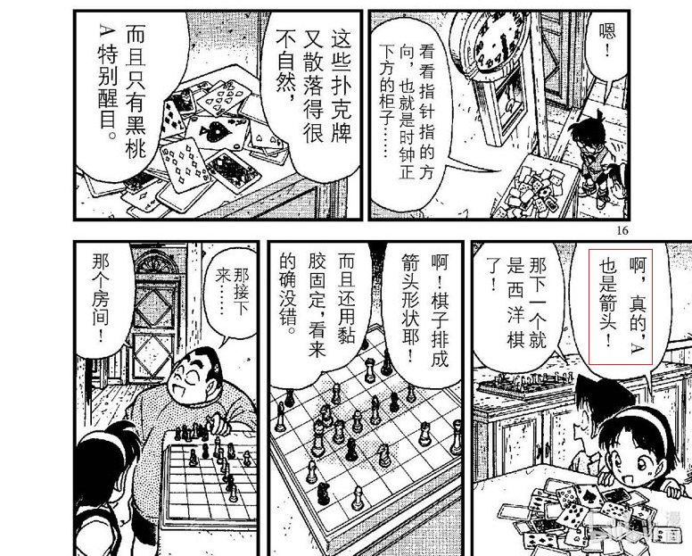
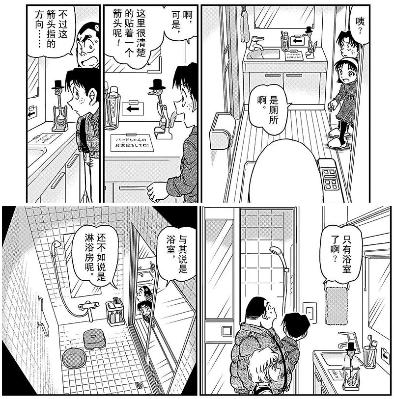
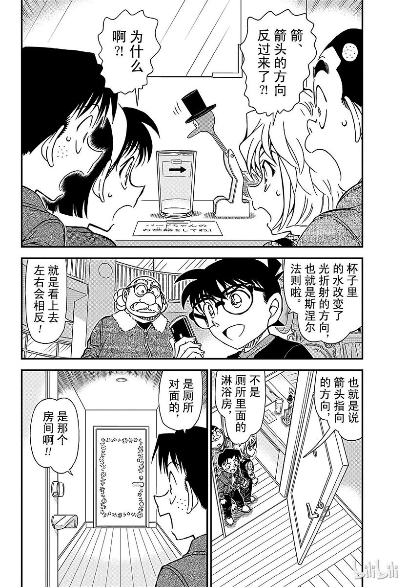
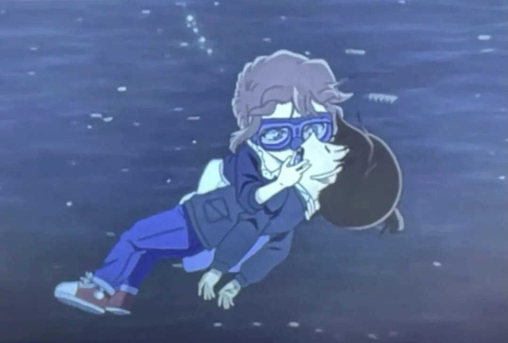
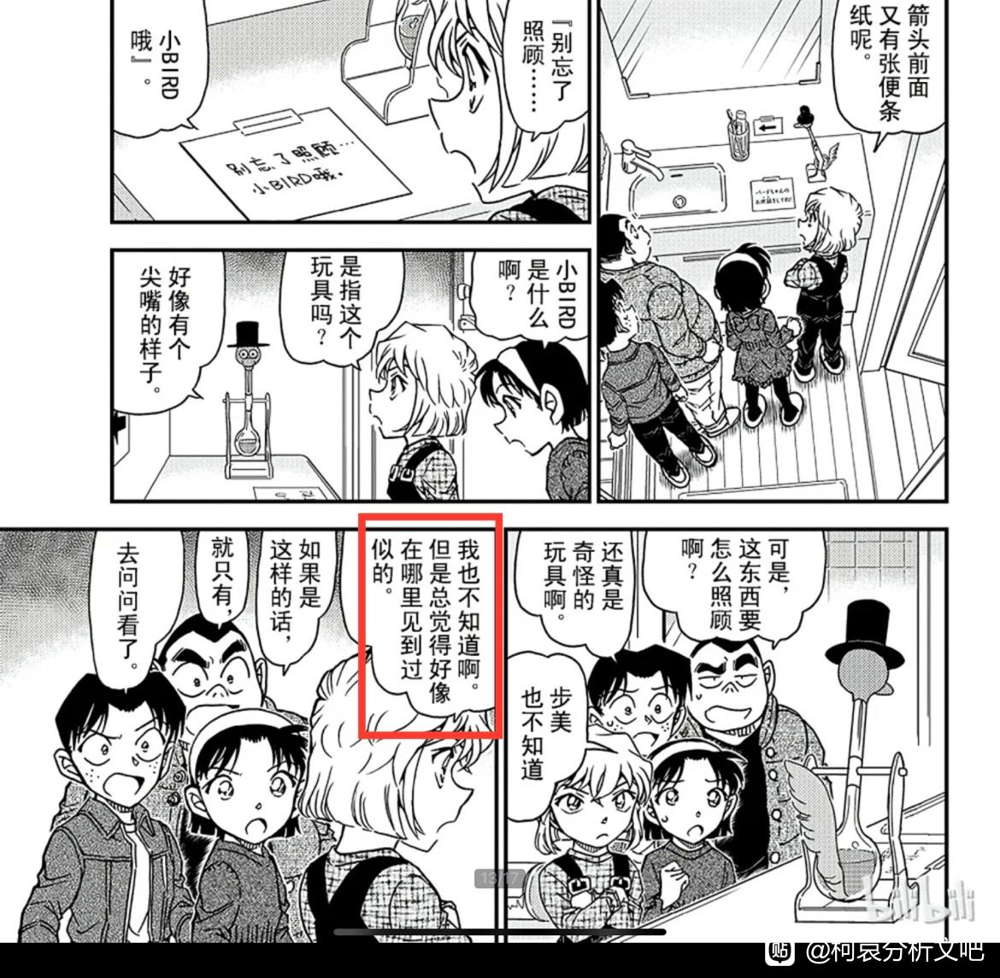
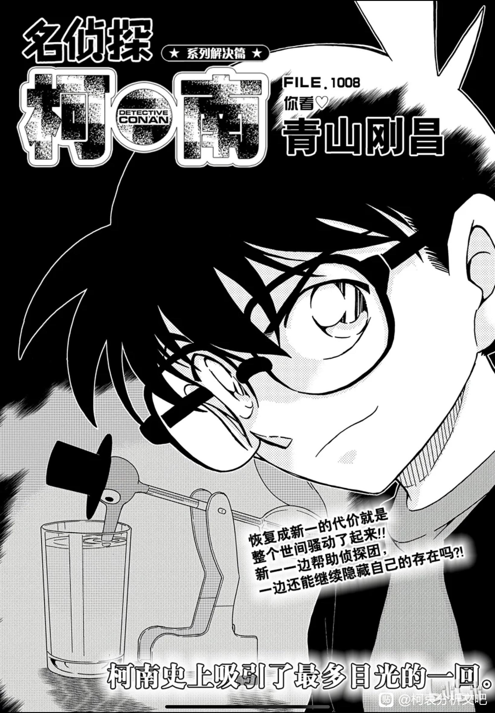

一楼祭天，欢迎转载。
文笔不好，描述不够准确，大家多包涵。
这是我从“寻找玛利亚的第71、72卷【箭】指的伦敦篇”这篇帖子得到的灵感。
先说结论，寻找玛利亚是青山对直到红修篇的新一感情线的一次总结，还有对新一感情归宿的暗示。
在这一篇中，青山是用寻找玛利亚的过程来暗示新一的情感经历，作为寻找目标的玛利亚象征'新一的真爱'。篇章中多次出现箭头，而箭头就代表着黑桃A，也象征着新一的感情。这一点也是有提示的，在寻找玛利亚这一篇章当中，青山刻意让侦探团提到了太阳星星和月亮的暗号，而在那个事件中，就有一幕用黑桃A当箭头的场景。反过来说也一样，既然黑桃A可以做箭头，那箭头也可以象征黑桃A。
这是我从“寻找玛利亚的第71、72卷【箭】指的伦敦篇”这篇帖子得到的灵感。
先说结论，寻找玛利亚是青山对直到红修篇的新一感情线的一次总结，还有对新一感情归宿的暗示。
在这一篇中，青山是用寻找玛利亚的过程来暗示新一的情感经历，作为寻找目标的玛利亚象征'新一的真爱'。篇章中多次出现箭头，而箭头就代表着黑桃A，也象征着新一的感情。这一点也是有提示的，在寻找玛利亚这一篇章当中，青山刻意让侦探团提到了太阳星星和月亮的暗号，而在那个事件中，就有一幕用黑桃A当箭头的场景。反过来说也一样，既然黑桃A可以做箭头，那箭头也可以象征黑桃A。

2023-10-26 09:21 | 战略性协调伙伴:谢谢你，我发现了♠A指着红心4。按顺序理解就是:方向 （♠）（是）1❤42023-12-06 07:48 | 永恒加菲:黑桃A（工藤新一）指着红桃4（灰原哀），寻找玛丽亚是红修篇的后续，红修篇与M26用一颗解药连接，所以说老贼一开始策划新哀不是为了表示自己极端让制作组折中2023-12-28 22:43 | 北宸乄😈:？ （用红桃是为了指向女性，走爱情向）
回复 永恒加菲 :志保是方片4兰是红桃a2023-12-29 02:54 | 永恒加菲:回复 北宸乄😈 :我认为一个人能对应多张牌，反正哀身份多的是。2024-01-01 09:37 | 绛舟www:回复 北宸乄😈 :有没有可能是表面上或者说新一的自我认知还是喜欢红桃代表的小兰，实际上潜意识真正动心的爱着的已经变成实际上是“4”的志保了2024-01-16 00:52 | 小石头小小😈:回复 北宸乄😈 :看到过一个分析所有四都代表志保，不过是不同阶段的2024-01-16 01:07 | -请修改昵称-:等会，又是西洋棋？

箭头第一次出现是在一进门口的玄关，在剧内是提示顺着箭头就能找到宝物，在剧外是青山提示，顺着箭头（新一感情变化）就能找到感情线的最终走向。
箭头第二次出现是在卧室，是一个一半镜中，一旦镜外的半真实，半虚幻的箭头，象征着新兰之间在伦敦篇之前的感情。在伦敦篇之前，新一明确喜欢小兰，但还没有在行动上表达过（告白），所以就是半虚幻，半真实的箭头。
箭头第三次出现是在书房，是有两本实体的书组成的箭头，顺带一提组成箭头的两本书分别是71、72卷，也就是伦敦篇。象征着新兰之间从伦敦篇到修学篇之前的感情，因为伦敦篇新一向小兰表白了，所以变成了完全真实的箭头。
箭头第四次出现是在玛利亚的房间，是一个由影子组成的虚幻的箭头，象征着红修篇之后的新兰感情。借用南英大佬在修学篇分析中的描述，新一对小兰的喜欢，已经变成了对过去高中生侦探生活的执念，他确实还喜欢小兰，但更多的是因为喜欢小兰就代表他还能回到过去，所以这是虚幻的箭头。
到此为止，对于过去1000话新兰之间的感情回顾已经总结完毕。
箭头第二次出现是在卧室，是一个一半镜中，一旦镜外的半真实，半虚幻的箭头，象征着新兰之间在伦敦篇之前的感情。在伦敦篇之前，新一明确喜欢小兰，但还没有在行动上表达过（告白），所以就是半虚幻，半真实的箭头。
箭头第三次出现是在书房，是有两本实体的书组成的箭头，顺带一提组成箭头的两本书分别是71、72卷，也就是伦敦篇。象征着新兰之间从伦敦篇到修学篇之前的感情，因为伦敦篇新一向小兰表白了，所以变成了完全真实的箭头。
箭头第四次出现是在玛利亚的房间，是一个由影子组成的虚幻的箭头，象征着红修篇之后的新兰感情。借用南英大佬在修学篇分析中的描述，新一对小兰的喜欢，已经变成了对过去高中生侦探生活的执念，他确实还喜欢小兰，但更多的是因为喜欢小兰就代表他还能回到过去，所以这是虚幻的箭头。
到此为止，对于过去1000话新兰之间的感情回顾已经总结完毕。
2023-10-31 05:37 | 没字也行:补充一个，在伦敦篇新一的告白就对兰和他自己充满了谎言。不需要到修学篇才能看出工藤新一对毛利兰执念是纯粹利己的，明面为了线索，暗地里是给新一的身份加锚，变回新一的理由还剩下和兰相爱。动画ED的名字就呼应了这位侦探是对自己说了谎。OP58也暗示了，伦敦告白对兰神来说也是意外的。
接下来是对新一感情归宿的提示。
箭头第五次出现是在洗手间，是一个贴在墙上的箭头，这个箭头指向错误的方向，而透过水这个媒介看第五个箭头就会得到第六个和第五箭头完全相反的箭头，这个箭头指向正确的方向。
之后侦探团经历了打不开的门之后，顺利的找到了玛利亚，而'打不开的门'可以理解为'阻碍'。
箭头第五次出现是在洗手间，是一个贴在墙上的箭头，这个箭头指向错误的方向，而透过水这个媒介看第五个箭头就会得到第六个和第五箭头完全相反的箭头，这个箭头指向正确的方向。


这是否暗示着新一原本的感情线（新兰线）是错误的，透过水（水下恋爱喜剧）这个媒介之后才会切换到正确感情线（柯哀线由暗线转为明线）。之后侦探团经历了打不开的门之后，顺利的找到了玛利亚，而'打不开的门'可以理解为'阻碍'。
2023-10-25 13:30 | 洛菲斯♬:柯南明确自己心意的事件可能也会和水有关系2023-12-05 21:19 | 贴吧用户_7WZJDbb:指M26哈哈，水下绝美爱情喜剧
总结一下，整个寻找玛利亚事件可以理解为：
顺着箭头走（顺着新一感情线走），先遇到第二个半真实半虚幻的箭头（喜欢小兰，但未表白），再遇到第三个真实的箭头（伦敦篇，喜欢小兰，向小兰告白），又遇到第四个虚幻的箭头（看似喜欢小兰，实际上更喜欢小兰所代表的过去的幻影），最后在洗手间将第五个箭头（新兰线）通过水（水下恋爱喜剧）这个媒介反转之后得到第六个箭头（柯哀线由暗转明），顺着第六个箭头（柯哀线）走，经历了打不开的门（阻碍）找到了玛利亚（找到真爱/柯哀HE）。
顺着箭头走（顺着新一感情线走），先遇到第二个半真实半虚幻的箭头（喜欢小兰，但未表白），再遇到第三个真实的箭头（伦敦篇，喜欢小兰，向小兰告白），又遇到第四个虚幻的箭头（看似喜欢小兰，实际上更喜欢小兰所代表的过去的幻影），最后在洗手间将第五个箭头（新兰线）通过水（水下恋爱喜剧）这个媒介反转之后得到第六个箭头（柯哀线由暗转明），顺着第六个箭头（柯哀线）走，经历了打不开的门（阻碍）找到了玛利亚（找到真爱/柯哀HE）。
這解釋還挺合理，之前就有帖子說m26水下戀愛喜劇箭頭是相反的也是透過飲水鳥這劇情，我比較好奇瑪利亞的定位，她幾乎都出現在柯哀劇情裡
2023-10-25 12:11 | 柳奕則:剛剛想到的腦洞，既然73喜歡名字梗，那單純用名字來看，瑪利亞(Maria)這個名字的象徵意義如下：2023-10-25 12:11 | 柳奕則:Maria is a historically feminine name of Latin origin.This name can refer to the Virgin Mary. Because of this connection, Maria holds multiple meanings, including “Star of the Sea,” “beloved,” or “bitter.” (太長分段打)2023-10-25 12:15 | 柳奕則:【翻譯：瑪麗亞（Maria）是一個歷史上源自拉丁語的女性名字。這個名字可以指聖母瑪利亞。由於這種聯繫，瑪麗亞擁有多種含義，包括“海洋之星”、“心愛的”或“苦澀的”。】 感覺青山是用瑪利亞這個角色的意義來隱喻柯哀之間的感情。什麼“海洋之星”、“心愛的”或“苦澀的”，也未免暗示的太明顯了吧2023-10-25 13:19 | 此生欲与江湖老:回复 柳奕則 :厉害！2023-10-27 09:21 | 贴吧用户_7PX2yAy:回复 柳奕則 :确实诶，这个音和 海2023-11-01 00:09 | 贴吧用户_GVXKVQK:回复 柳奕則 :那“寻找玛利亚”也可以理解成寻找爱情咯2023-11-11 08:50 | 贴吧用户_0CEt5VS:回复 柳奕則 :“苦涩的”这个意义竟然还跟南英的默示录部分“真相”解释对应上了，难道刚子他真是天才？！

暴论一下，水下恋爱喜剧在后边的漫画里一定还会出现
2023-10-25 10:47 | 诗墨羽🌀:这个感觉，可以把暴论二字换成预言
我认为只有大人才能打开的门就是明示新志同框 当时看完玛利亚篇期待死了
当时看完玛利亚篇期待死了
当时看完玛利亚篇期待死了2024-01-05 05:42 | 贴吧用户_Q4eCR5W:只有大人能打开的门不会是新志涩涩吧😍2024-01-05 05:45 | ✨星光🌟魔女💫:回复 贴吧用户_Q4eCR5W :可以可以
很可以
确实很奇妙呢，结合前后的篇章来看，安排红修后马上跟着这个应该是有必要性的。之后黑兔亭就红茶会了。
而且玛利亚和哀酱莫名关系很好，她甚至可以直接叫哀酱！！！这是以前只有步美才有的特权啊！！！
😰这么离谱啊
先收藏，等时间带来答案
太厉害了，等以后真画出来了来顶贴

终于有人说玛利亚了！我得说啊，我记得看过的魔快截图，快青糖有一话青子的好友长的好像玛利亚。。。会不会是把见证人都画的一样啊
好，非常好！
下次就是成人版的水下华尔兹，彻底打开那道门
2023-10-31 04:54 | 吹啵可以有:细说门
好贴，期待后面新志同框
期待一波
cy，蹲一波预言成真
这个推理一点也不牵强，确实很值得细品
2023-12-04 19:54 | 阿德曼托斯:捉
這解讀好有趣！！謝謝lz！
这是不是也再说，透过水的箭头是反的

很有意思的推理，静待73后续刻画的柯哀新志
 好细节。。。。
好细节。。。。留个脚印，以后回来看看（）
刚刚看了一个关于“初遇论”的设想，其中提到了“饮水鸟”这个玩具。而后我去翻这期漫画，就是在寻找玛利亚中出现，且哀说“我好像在哪见过”，后电话求助柯南。后一话解决篇海报也以饮水鸟为背景（有没有大哥能分析下这个标题带了个爱心是什么含义）。个人认为哀的“好像见过”是埋下一个伏笔，但是否后续引爆这颗雷还得看73。
刚刚看了一个关于“初遇论”的设想，其中提到了“饮水鸟”这个玩具。而后我去翻这期漫画，就是在寻找玛利亚中出现，且哀说“我好像在哪见过”，后电话求助柯南。后一话解决篇海报也以饮水鸟为背景（有没有大哥能分析下这个标题带了个爱心是什么含义）。个人认为哀的“好像见过”是埋下一个伏笔，但是否后续引爆这颗雷还得看73。


2023-12-21 16:09 | 采桔花-:按照楼主的思路，水中的箭头如同水下恋爱喜剧，反转擦由暗转明，而哀对于导致水中箭头反转的关键道具“饮水鸟”感到熟悉的这个伏笔，可以猜测出“饮水鸟”可能会是稳固新志线的一个重要道具。（吧内搜索了一下前面也有吧友这么说了）
emmm水下是不是跳太快了，时光胶囊是在M26之后创作的，但玛利亚创作的时候真的有黑鱼的相关创作吗，这个我还真不知道，感觉水这个解释有点怪
2024-01-05 04:53 | 森宫奈奈🌀:应该说，是m26是按照玛利亚的伏笔写的。你看m26的那个双鲨剪影，与实际的剧情正好是相反的。而青山说整个电影就眼睛超人可以看到哀对柯南的单箭头，那么水下华尔兹是否就是水下箭头就反过来了呢？2024-01-05 11:02 | Warriors_后羿:回复 森宫奈奈🌀 :确实有理